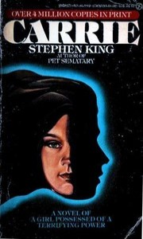

Misery, de Stephen King
Ficha técnica

-
Datos de la obra
- Título: Carrie
- Autor: Stephen King
- País: Estados Unidos
- Género: Thriller
- Fecha de publicación:
Sobre la obra
Una joven se enfadó cada vez más y un pueblo se retorció de dolor...
Carrie no era consciente de que poseía un poder aterrador. Pero fue suficiente para transformar un pequeño y tranquilo pueblo de Nueva Inglaterra en un holocausto de destrucción más allá de la imaginación del hombre. Colegiala inocente o demonio vengativo, Carrie te hará temblar....